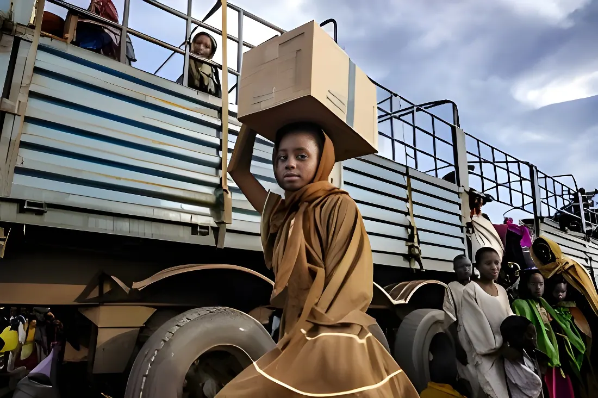

Le 15 avril 2023, les Forces armées soudanaises (SAF) et les Forces de soutien rapide (RSF) s'engageaient dans une guerre fratricide qui allait rapidement devenir la pire crise humanitaire au monde. Trois ans plus tard, plus de 150 000 morts, 14 millions de déplacés, une famine confirmée dans des dizaines de régions — et une communauté internationale spectaculairement absente.
Le 15 avril 2023, des attaques coordonnées des paramilitaires des Forces de soutien rapide (RSF) contre des installations militaires dans tout le pays déclenchent le conflit. À leur tête, le général Mohamed Hamdan Daglo, dit « Hemedti », ancien chef de milice janjawid reconverti en puissance paramilitaire d'État. Face à lui, le général Abdel Fattah al-Burhan, à la tête des Forces armées soudanaises (SAF) et chef de l'État de facto depuis le putsch de 2021.
Les deux hommes avaient mené ensemble ce coup d'État contre la transition démocratique issue de la révolution de 2019. Mais leur alliance de circonstance masquait une rivalité profonde pour la mainmise sur les ressources de l'État : mines d'or, corridors commerciaux, rentes économiques. Lorsque la question de l'intégration des RSF au sein de l'armée régulière — et donc de la perte d'autonomie d'Hemedti — s'est posée, la rupture est devenue inévitable. Ce que les observateurs avaient qualifié au départ de « règlement de comptes entre deux autocrates » s'est rapidement transformé en guerre totale, ethnicisée, et marquée par des crimes de masse.
La guerre a rapidement réactivé la géographie des massacres. Les RSF, héritières institutionnelles des milices janjawid qui avaient perpétré le génocide du Darfour au début des années 2000, ont reproduit les mêmes méthodes contre les mêmes populations : Fours, Masalits, Zaghawa — communautés non arabes systématiquement ciblées. En octobre 2025, après dix-huit mois de siège, la ville d'El Fasher, dernière capitale du Darfour encore tenue par l'armée, tombe aux mains des RSF. Les témoignages font état d'exécutions ciblées, de viols de masse, de pillages systématiques. Le Haut-Commissariat de l'ONU aux droits de l'homme qualifie ces actes de crimes de guerre pouvant relever de crimes contre l'humanité.
La chute d'El Fasher confère aux RSF le contrôle de l'ensemble des cinq capitales du Darfour. En janvier 2026, plus de 2 000 prisonniers — combattants et civils — sont détenus dans la seule prison de Shala à El Fasher, dans des conditions documentées comme inhumaines par plusieurs organisations de défense des droits. L'hôpital pédiatrique de la ville a été transformé en centre de détention et d'exécution.
Les RSF lancent des attaques simultanées contre des bases militaires à travers le pays. Les combats éclatent à Khartoum, El Fasher, Port-Soudan. Le monde est surpris par la rapidité de l'effondrement.
Les RSF s'emparent de la quasi-totalité de Khartoum et avancent au Darfour et au Kordofan. Al-Burhan replie le gouvernement à Port-Soudan. La Déclaration de Jeddah, premier cadre de cessez-le-feu, échoue rapidement.
La famine s'installe dans plusieurs régions. Le siège d'El Fasher s'intensifie — la ville résiste, mais au prix d'une catastrophe humanitaire interne. Les RSF sont accusées de bloquer l'aide humanitaire. L'ONU parle de la « pire crise de déplacement au monde ».
L'armée soudanaise (SAF) reprend Khartoum après deux ans d'occupation RSF. Tournant symbolique majeur, mais la ville est dévastée : pillages massifs, corps découverts, infrastructure effondrée.
Attaque de grande ampleur sur le camp de Zamzam au Darfour du Nord, le plus grand camp de déplacés internes du pays. Plus de 400 000 personnes fuient. MSF se retire. Amnesty International documente des exécutions délibérées de civils.
El Fasher tombe après 18 mois de siège. Les RSF contrôlent désormais l'intégralité du Darfour. Massacres documentés à grande échelle. La CPI qualifie certains actes de « génocide en cours » selon plusieurs experts indépendants.
Le gouvernement soudanais retourne à Khartoum depuis Port-Soudan. Le Premier ministre Kamil Idris annonce le début de la restauration des services dans une capitale en ruines. La partition de facto du pays est consommée.
Troisième anniversaire du conflit. Amnesty International, l'ONU et de nombreuses ONG publient des bilans accablants. La communauté internationale est interpellée sur son inaction. Aucun cessez-le-feu durable n'a été atteint.
Derrière les deux généraux, des puissances régionales et mondiales alimentent le conflit en armes et en ressources. Les Émirats arabes unis sont le principal soutien des RSF : livraisons d'armes documentées, financement, recrutement de mercenaires — notamment des combattants colombiens, ce qui a conduit les États-Unis à sanctionner plusieurs entités en avril 2026. L'Éthiopie apporte également un soutien croissant aux RSF, motivé par sa rivalité avec l'Égypte, elle-même alliée des SAF. Un camp d'entraînement secret financé par Abu Dhabi y a été révélé par Reuters en février 2026.
Du côté des SAF, l'Égypte et l'Iran (drones) apportent une aide militaire. La Russie, absorbée par l'Ukraine et déjà impliquée au Sahel via Africa Corps, reste en retrait mais surveille attentivement un pays riche en or et stratégiquement positionné entre la mer Rouge et le cœur du continent africain. Cette guerre par procuration empoisonne toute médiation : chaque puissance extérieure a davantage intérêt à la victoire de son camp qu'à un accord de paix.
Les données compilées par l'ONU et les grandes ONG à l'occasion du troisième anniversaire dressent un tableau sombre. En 2025, le Haut-Commissariat aux droits de l'homme a recensé 11 300 civils tués dans la seule année — un chiffre que les experts jugent très en dessous de la réalité. Le bilan global est estimé à plus de 150 000 morts depuis le début du conflit. 25 millions de Soudanais souffrent d'insécurité alimentaire aiguë ; la famine a été officiellement confirmée dans 10 régions, et 17 autres sont menacées.
Les violences sexuelles sont utilisées comme arme de guerre systématique : plus de 500 victimes recensées en 2025, un chiffre là encore sous-estimé. Les femmes et les filles des communautés non arabes sont particulièrement visées. L'UNICEF alerte sur le doublement du nombre d'enfants nécessitant une aide humanitaire — de 7,8 millions début 2023 à plus de 15 millions en 2026, dont 770 000 au bord de la mort par malnutrition aiguë. Les coupes dans le financement de l'aide internationale ont contraint l'UNFPA à quitter plus de la moitié des établissements de santé qu'elle soutenait.
| Acteur | Position | Soutiens |
|---|---|---|
| SAF (al-Burhan) | Est, Centre, Khartoum | Égypte, Iran (drones) |
| RSF (Hemedti) | Darfour, Kordofan (partiel) | Émirats arabes unis, Éthiopie |
| Groupes armés du Darfour | Alliance fluctuante | Ralliés aux SAF (nov. 2023) |
| MPLS-N | Monts Nouba | Rallié aux RSF (fév. 2025) |
| ONU / CPI | Extérieur | Enquêtes, sanctions limitées |
« Cette guerre est horrible. Elle est sanglante. Elle est absurde. Le conflit au Soudan n'est pas oublié : il est délibérément ignoré et négligé. »
— Volker Türk, Haut-Commissaire de l'ONU aux droits de l'homme, Genève, février 2026Trois ans de guerre n'ont produit aucun cessez-le-feu durable. La Déclaration de Jeddah de 2023, les pourparlers de Manama début 2024, la conférence de Berlin en 2026 — coorganisée par l'Allemagne, l'UE, la France, le Royaume-Uni et l'Union africaine, avec plus d'un milliard de dollars de promesses d'aide — n'ont pas suffi à faire taire les armes. Le Tchad a fermé sa frontière orientale en février 2026, après des incursions répétées de groupes armés. La régionalisation du conflit est désormais une réalité : des mouvements armés opèrent entre le Soudan, le Soudan du Sud et la République centrafricaine.
Le Conseil de sécurité de l'ONU, paralysé par les vetos et les jeux d'influence, n'a pas étendu l'embargo sur les armes en vigueur au Darfour au reste du Soudan, malgré les appels répétés d'Amnesty International. La Mission d'établissement des faits de l'ONU a vu son mandat prolongé, mais ses conclusions restent sans suite judiciaire sur l'ensemble du territoire — la CPI ne disposant que d'un mandat limité au Darfour.
Trois ans après le 15 avril 2023, le Soudan est de facto scindé en deux entités antagonistes. À l'est, un gouvernement SAF revenu à Khartoum dans une capitale dévastée tente de reconstituer un État. À l'ouest, les RSF exercent une souveraineté paramilitaire sur le Darfour et ses corridors commerciaux, finançant une guerre qui se nourrit d'elle-même. Entre les deux, des millions de civils pris en otage par des belligérants qui ont fait de la faim et de la violence sexuelle des instruments de guerre délibérés. Ce qui frappe, au bout de trois ans, c'est moins l'intensité du conflit que l'ampleur du silence international — un silence d'autant plus accablant que les mécanismes d'alerte ont fonctionné, que les crimes ont été documentés, et que la communauté internationale disposait du temps d'agir. Le Soudan restera comme l'une des grandes catastrophes annoncées et ignorées du XXIe siècle.